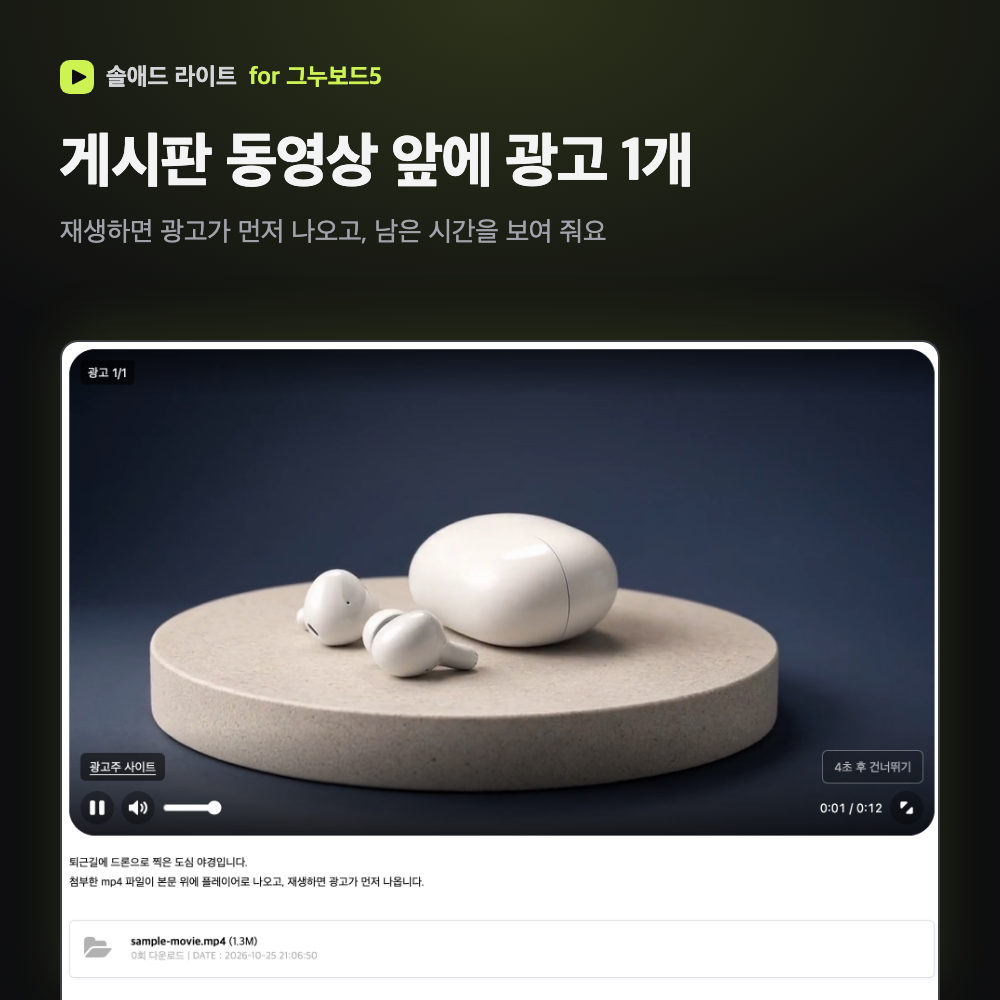
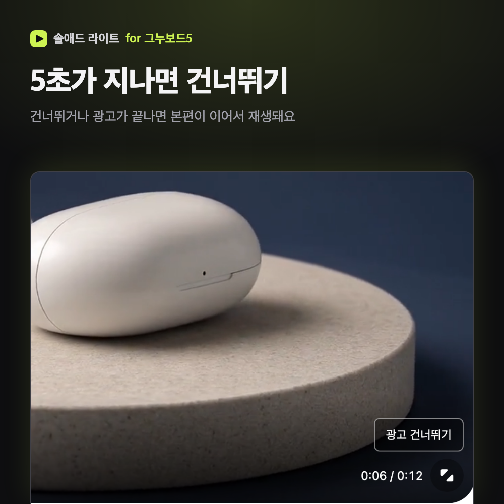
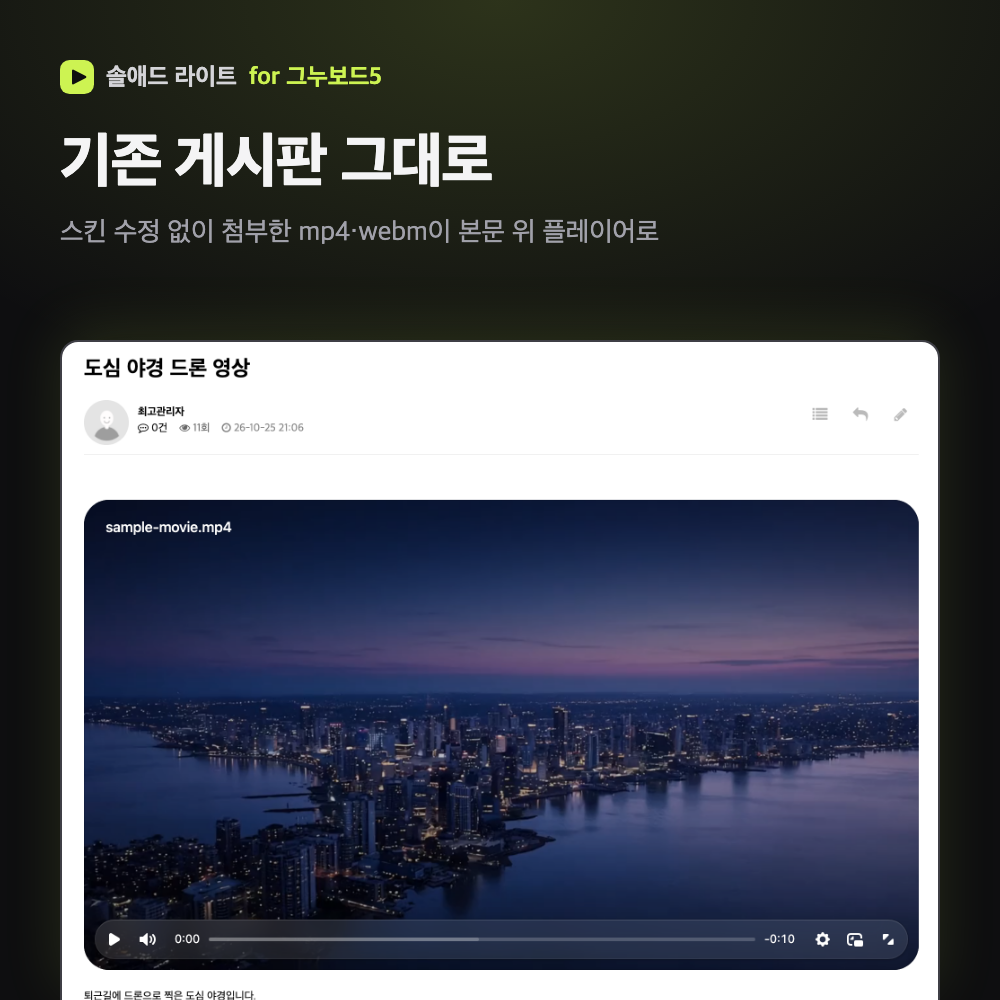
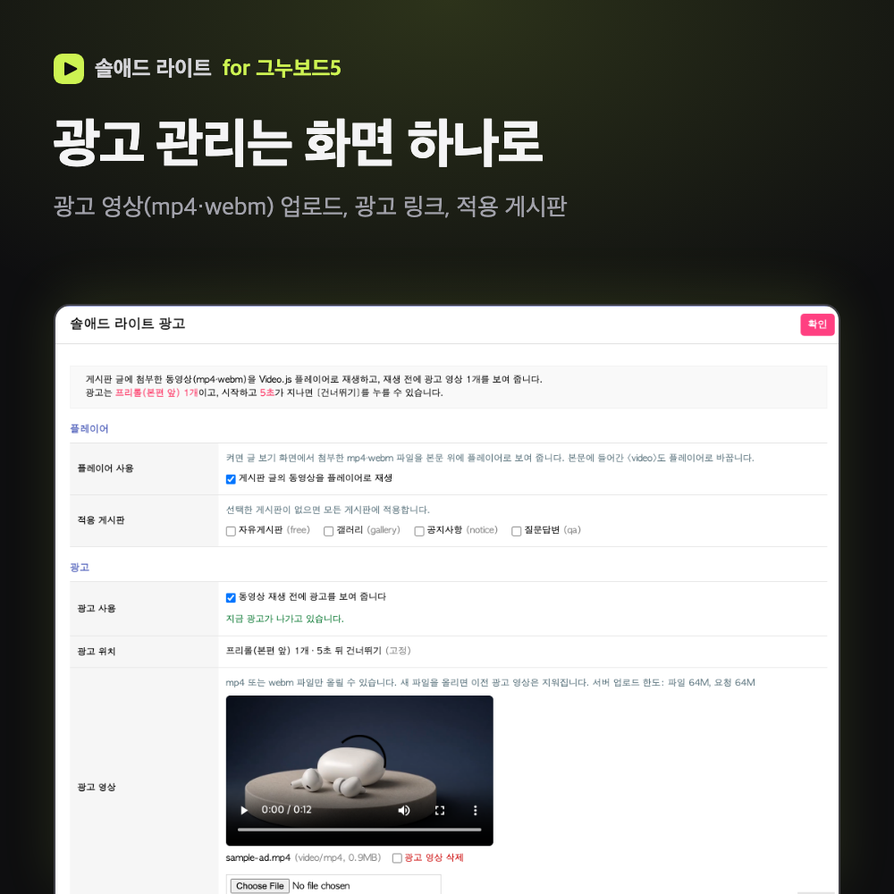
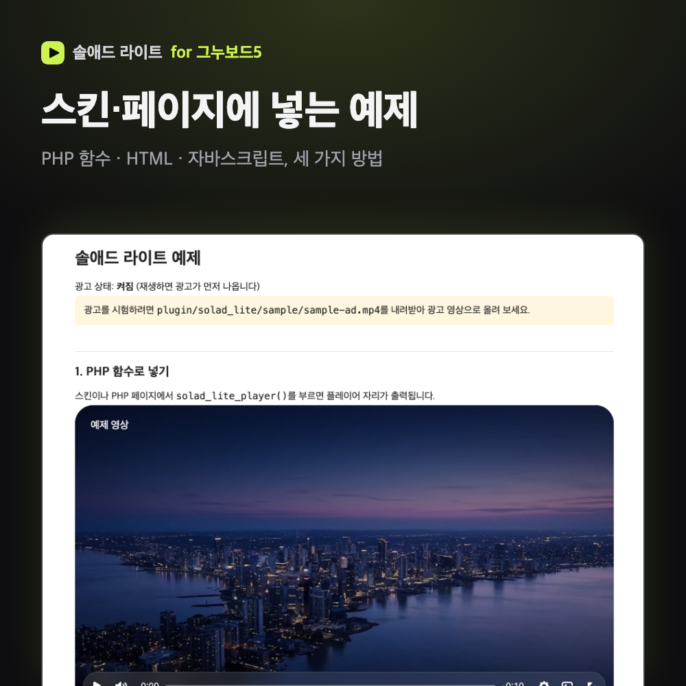
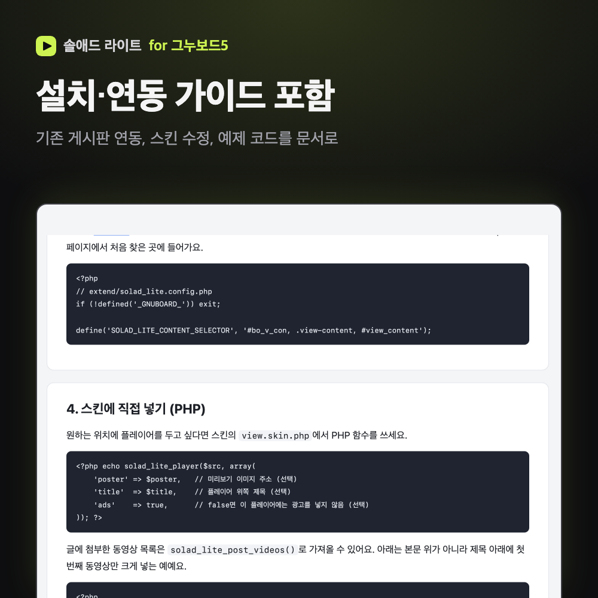

그누보드5 게시판에 첨부한 동영상(mp4·webm)을 Video.js 플레이어로 바꾸고,
관리자에서 올린 광고 영상 1개를 재생 전에 보여 줍니다. 5초가 지나면 건너뛸 수 있어요.
| 플레이어 js·css | solad-lite.js, solad-lite.css와 Video.js 플레이어 파일. 동영상이 있는 페이지에서만 플레이어를 읽어요. |
|---|---|
| 게시판 자동 연동 | extend 파일 하나로 모든 게시판(또는 고른 게시판)의 글 보기 화면에 적용. 스킨 수정 없음. |
| 광고 관리 화면 | 관리자 > 게시판관리 > 솔애드 라이트 광고. 광고 영상 업로드, 광고 링크·설명, 적용 게시판. |
| 예제 | PHP 함수, HTML, 자바스크립트로 플레이어를 넣는 예제 페이지와 시험용 영상. |
| 문서 | 설치 가이드, 게시판 연동 가이드(HTML 2종). |
1. 재생 전에 광고 1개 (프리롤)
동영상을 재생하면 관리자가 올린 광고 영상이 먼저 나와요. 광고 링크를 적으면 "광고주 사이트" 버튼이 나오고, 누르면 새 창으로 열려요.

2. 5초 후 건너뛰기
광고가 시작되고 5초 동안 남은 시간을 보여 준 뒤 [광고 건너뛰기]를 누를 수 있어요. 건너뛰거나 광고가 끝나면 본편이 이어서 재생돼요.

3. 기존 게시판 그대로 연동
파일만 올리면 글에 첨부한 mp4·webm이 본문 위에 플레이어로 나오고, 본문에 들어간 <video>도 플레이어로 바뀌어요. 예전에 쓴 글에도 바로 적용되고, 게시판을 골라 적용할 수도 있어요.

4. 광고 관리 화면
광고 영상(mp4·webm)을 직접 올리고, 광고 사용을 켜고 끄는 화면 하나예요. 확장자만 바꾼 파일은 파일 내용을 검사해 거절해요. 새 광고를 올리면 이전 광고 파일은 지워져요.

5. 스킨·페이지에 넣는 예제
원하는 위치에 플레이어를 두고 싶다면 PHP 함수 solad_lite_player(), HTML data-solad-lite,
자바스크립트 SoladLite.mount() 중 편한 방법을 쓰세요. 플레이어마다 광고를 끌 수도 있어요.

6. 설치·연동 가이드
설치 순서, 업로드 용량 늘리기, 스킨에 직접 넣기, 본문 영역이 다른 스킨 맞추기, 문제 해결을 문서로 드려요.

라이트는 플레이어 교체와 광고 1개에 집중한 버전이에요. 아래 기능은 들어 있지 않아요.
| 그누보드 | 5.6 이상 (5.6.43에서 확인) |
|---|---|
| PHP | 7.4 이상 |
| DB·서버 | 그누보드가 동작하는 환경이면 돼요. 설정 테이블 1개는 처음 열 때 자동으로 만들어요. ffmpeg 불필요. |
| 브라우저 | 크롬·엣지·사파리·파이어폭스 최신 버전 |
자세한 내용은 zip의 docs/install.html(설치 가이드)과 docs/guide.html(게시판 연동 가이드)에 정리되어 있어요.